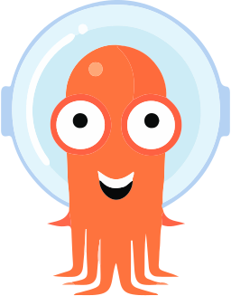
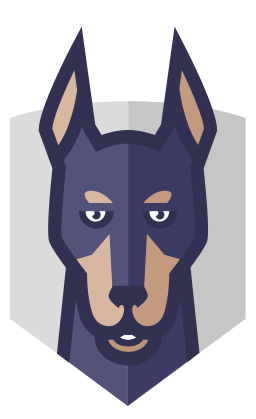

Current Stage 1 diagram - Stage 2 version pending
Infrastructure path
Terraform foundation, state separation, cluster boundaries, and environment-aware inputs.
Current Stage 1 diagram - Stage 2 version pending
Infrastructure path
Terraform foundation, state separation, cluster boundaries, and environment-aware inputs.
Stage 2 planning baseline
Governance before tooling.
Planning first
Governance
Environment model
Workflow boundaries
Promotion path
Tooling after the model
OpenShift
 GitHub Actions
GitHub Actions
 Vault
Vault
 Terraform
Terraform
 Kubernetes
Kubernetes
 Prometheus
Prometheus
 Grafana
Grafana
Stage 1 paths being evolved
These are Stage 1 baseline diagrams. Stage 2 keeps the same readable ownership paths, then adds shared-platform guardrails.
Current Stage 1 diagram - Stage 2 version pending
Infrastructure path
Terraform foundation, state separation, cluster boundaries, and environment-aware inputs.
 Current Stage 1 diagram - Stage 2 version pending
Platform path
Kubernetes boundaries, shared runtime controls, policy direction, GitOps, and secrets governance.
Current Stage 1 diagram - Stage 2 version pending
Platform path
Kubernetes boundaries, shared runtime controls, policy direction, GitOps, and secrets governance.
 Current Stage 1 diagram - Stage 2 version pending
Application path
One image promoted through dev, staging, and prod with clearer validation and rollback evidence.
Current Stage 1 diagram - Stage 2 version pending
Application path
One image promoted through dev, staging, and prod with clearer validation and rollback evidence.
Working method
DevOps augmented with AI: narrow prompts, manual approvals, saved mini-states, and controlled refinement before each next change.
Control loop, not autopilot
AI accelerates drafting, but ownership stays with manual review, small checkpoints, and intentional corrections.
flowchart TD Request["Narrow Codex GPT-5.5 request
Small controlled change, detailed prompt,
enough context, one modification at a time."] Review["Manual review
Check diff, design intent, naming, ownership, and current stable state."] Decision{"Aligned with intent?"} Accept["Close enough
Accept, then refine manually."] Reject["Not aligned
Reject, clarify, ask again."] Refine["Refine until correct
Rewrite or retype critical paths for ownership and retention."] Stable["Save stable mini-state in Git
Commit or checkpoint the satisfying codebase state before the next narrow change."] Request --> Review --> Decision Decision -- "Close enough" --> Accept --> Refine --> Stable --> Request Decision -- "Not aligned" --> Reject --> Request classDef principle fill:#e7f3f1,stroke:#0f766e,color:#151922,stroke-width:2px; classDef work fill:#ffffff,stroke:#c8e5df,color:#151922,stroke-width:1.5px; classDef review fill:#e8eefc,stroke:#1d4ed8,color:#151922,stroke-width:2px; classDef reject fill:#f7ebe6,stroke:#9a3412,color:#151922,stroke-width:2px; class Request principle; class Stable,Accept,Refine work; class Review,Decision review; class Reject reject;
Execution tracker
The work is intentionally ordered. Each step reduces ambiguity for the next one instead of piling tools onto an unstable model.
| Step | Scope | Status |
|---|---|---|
| 1 | Create the Stage 2 implementation plan | Completed |
| 2 | Define the environment model | Completed |
| 3 | Refactor configuration for multi-environment support | In progress |
| 4 | Add the promotion workflow design | Pending |
| 5 | Add Stage 2 tools after the model is stable | Pending |
Constraints already locked
These are not optional design ideas anymore. They are the constraints the implementation must consume.
Environment model
Local -> dev -> staging -> prod
Certification is reserved for Stage 3. Stage 2 focuses on controlled promotion and shared-platform governance.
Cluster model
Two-cluster boundary
One non-prod cluster for dev and staging, one isolated prod cluster for production.
Workflow rule
Stage 1 stays versioned
Stage 1 remains replayable through the release tag. `main` evolves to Stage 2 instead of running two active workflow generations.
Promotion rule
Same image across environments
Build once, publish once, promote the same immutable tag or digest through dev, staging, and prod.
What changes by domain
Stage 2 is not one giant refactor. Each area changes for a specific reason tied to the shared-platform model.
Infrastructure
Multi-environment foundation
Introduce environment-aware inputs, Terragrunt wiring, state separation, naming, tags, and cluster boundaries.
- `dev`, `staging`, `prod` inputs
- Terragrunt for repeated environment wiring
- two-cluster Azure foundation
Platform
Shared runtime controls
Evolve Kubernetes resources toward stronger namespace, policy, observability, GitOps, and secrets governance.
- environment-aware namespaces and RBAC
- Kyverno and GitOps direction
- shared observability hardening
OpenShift
Kubernetes
Vault
Kyverno

Argo CDApplication
Promotion-safe packaging
Keep one image, add environment-aware values, and make deployment behavior promotion-safe across dev, staging, and prod.
- Helm values per environment
- immutable image promotion
- stable runtime contracts
Reliability
Validation and rollback evidence
Stage 2 makes staging validation and rollback readiness explicit instead of assuming they exist implicitly.
- Postman + Newman staging E2E
- rollback runbooks
- service-level interpretation
Workflows
Boundaries before automation sprawl
GitHub Actions stay flat in `.github/workflows/`, but promotion logic becomes environment-aware.
- team-prefixed workflow families
- prod approval in GitHub Environments
- staging evidence before prod

Snyk Trivy CheckovDocs and governance
Readable evolution path
Docs make the progression legible: Stage 1 proof, Stage 2 constraints, and later Stage 3 expansion.
- governance before tooling
- implementation plan before code churn
- clear stage boundaries